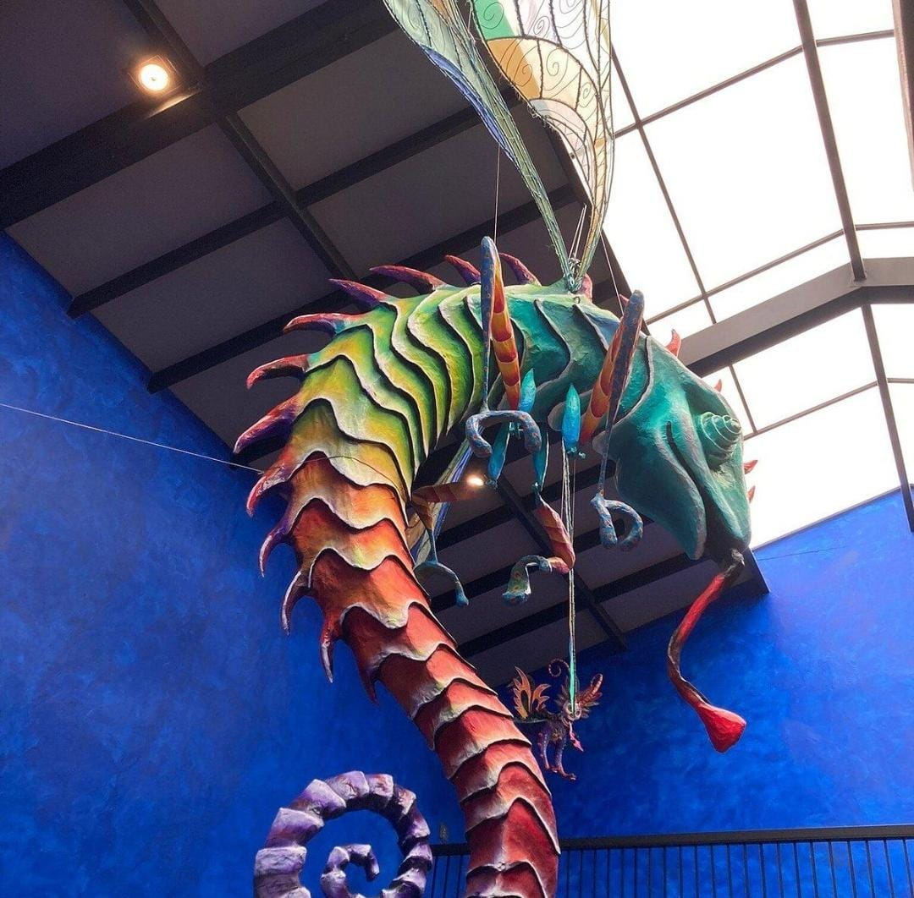

" Valle de Bravo no solo es lago: es arte, memoria y tradicion. "

El Museo de Arte Popular de Valle de Bravo es una joya escondida en el centro de este Pueblo Mágico del Estado de México. Aunque es pequeño, es considerado uno de los atractivos culturales más importantes del pueblo, porque guarda una colección privada de arte popular mexicano exhibida de forma muy cuidada y colorida.
Este museo no es el Museo de Arte Popular de la Ciudad de México, es el de Valle de Bravo, y su enfoque es mostrar la riqueza artesanal de la región. Sus salas reúnen piezas históricas y contemporáneas que permiten ver cómo ha evolucionado el arte popular con el paso del tiempo, desde lo tradicional hasta lo moderno.
En su interior se pueden encontrar diferentes expresiones del arte popular, como alfarería, indumentaria tradicional y objetos representativos de las etnias mazahua y otomí, que son los pueblos originarios de la región. Muchas de estas piezas son galardonadas, es decir, que han sido premiadas por su valor artístico y cultural.
Además de la alfarería y los textiles, el museo exhibe figuras y esculturas modernas como alebrijes, pinturas y figuras típicas de diferentes estados de México. Cada pieza refleja las tradiciones, los materiales y las técnicas que los artesanos han transmitido de generación en generación.
Una de las cosas que más destacan los visitantes es que la visita es guiada. Los guías explican con mucho detalle el significado de cada pieza, de qué región viene, con qué material está hecha y qué técnica se usó para crearla. Por eso, aunque el recorrido puede durar unos 40 minutos, muchas personas se quedan más de una hora haciendo preguntas.
El museo también tiene una función educativa y social. No solo exhibe objetos, sino que organiza actividades culturales y educativas para que visitantes y habitantes de Valle de Bravo reconozcan y valoren el patrimonio artesanal de la zona. De esta manera, ayuda a preservar la memoria y las tradiciones de las comunidades mazahua y otomí.
Lo mejor es que la entrada es gratuita, lo que lo convierte en una parada perfecta para familias y estudiantes. Es un lugar ideal para entender que Valle de Bravo no es solo lago, bosque y deportes, sino también un pueblo con identidad, historia y manos artesanas que siguen creando arte hasta hoy.